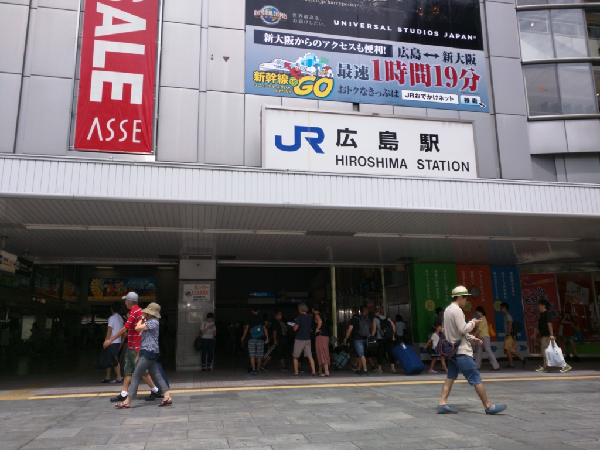
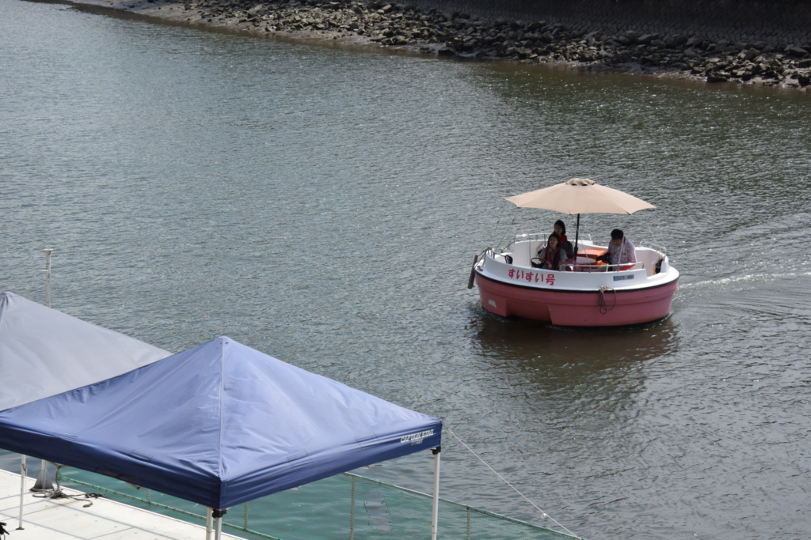
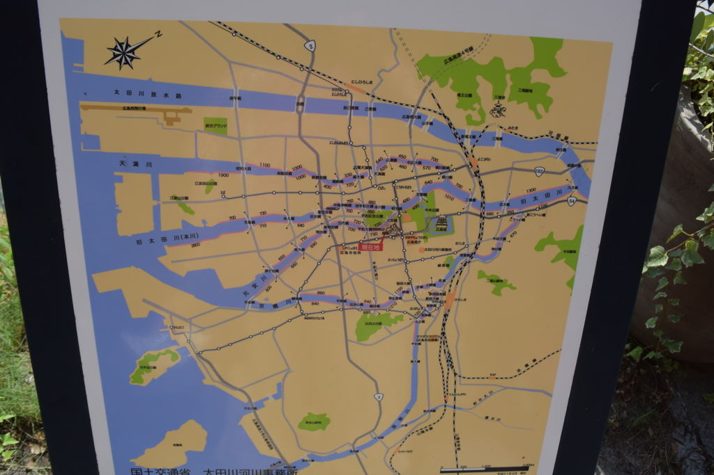
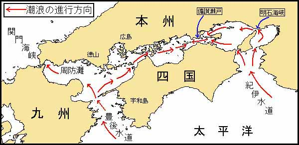
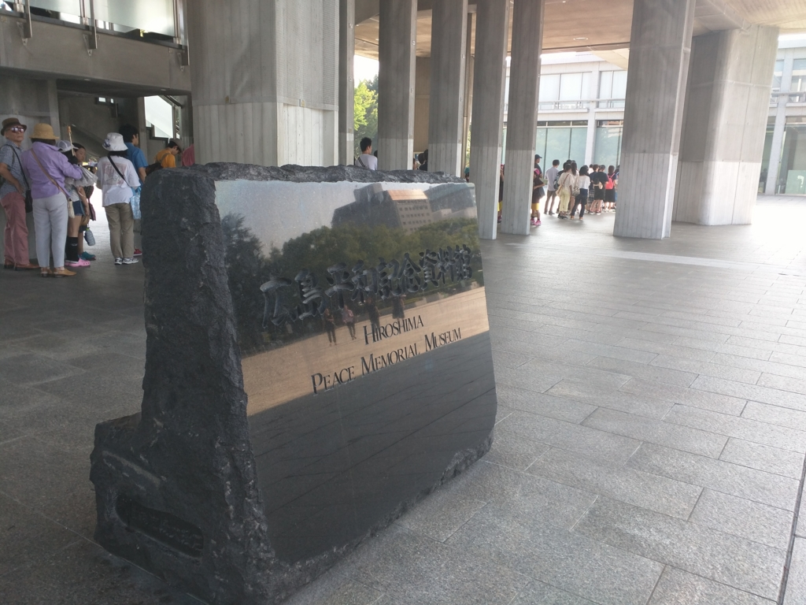
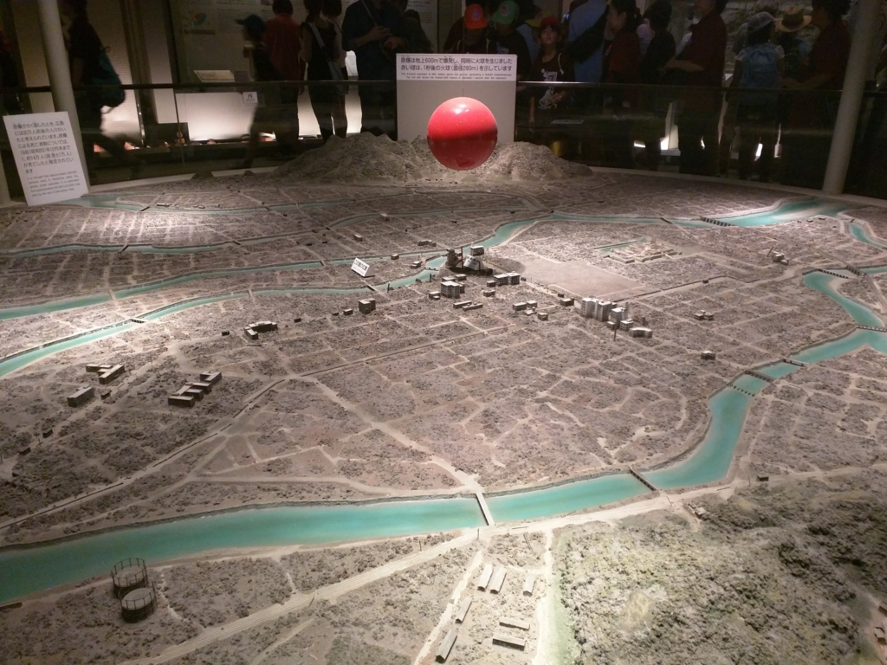

終戦記念日：広島行ってきたった。
公開日：

お盆休みに呉に行ったお話の続き。10月にはいって、お盆休みのことを書くという。まぁ、いろいろ忙しかったし、多少はね？
2日間呉を堪能したあと、電車で広島へ移動。確か30分ぐらいだった気がする。平和祈念公園の近くに宿をとっていたので、そこまでバスで移動。チェックインまでまだ時間があったので、原爆ドームをみてきた。
生まれて初めて見たけど、ほんまにあったんやなー。写真で見た通りで、変に感心してしまった。

それでもまだ時間が余ったので、遊覧船に乗ってみた。タライのような小さな船だが、運転手兼ガイドさんにT字型の相生橋が原爆投下の目印になったらしいとか、あれが『はだしのゲン』の舞台になった小学校ですよとか、マツダスタジアムはお勧めとか、いろいろ教えてもらえて（川からだからあんまりよくわからんかったが）、割と楽しめた。

広島っていう街は川が多くて、しかも干満の差が激しいらしい（この時期で 3m ぐらいだっけ？）。僕たちが船に乗った午後3時はちょうど干潮だったのだけど、確かに橋げたには上の方に潮の跡がついていた。

自分は文系人間なので、干満の原理なんてあんまりわかってないので（月の引力だか何だかなんだっけ？）、なんでこの地方だけ干満が激しいのかさっぱりわかっていないのだけど、瀬戸内海を一つのバケツと思えばちょっとわかりやすいのかもしれない。このバケツには、潮が満ちると関門海峡・豊後水道・紀淡海峡などから海水がダバーッと流れ込んできて、逆に潮が引くとドバーッと流れ出ていく。広島、岩国、呉のあたりはそういう“海水の出入り口”から一番遠くて（バケツの一番深いところって感じやろうか）、ダバーッとドバーッの差が激しくなる……っぽい。知らんけど（瀬戸内海の潮汐の干満差(かんまんさ）はどれぐらい？）。そのおかげでこのあたりは潮干狩りが盛んだったり、厳島神社の鳥居みたいなのがいい感じだったりするわけだね。
――わかったような、わからないような。
それはともかく、遊覧船“すいすい号”は割と楽しかったので、暇があれば乗ってみてもいいかも。

翌日は、ちょうど終戦記念日。少しだけ早起きして、平和祈念資料館にいってきた。並んでまでみる気はなかったので。ぶっちゃけ、こういうところはあまり行きたくないのだけど、一生に一度はみておくべきものだろう。むしろ35歳になるまで一度も見てへんのってどうなのって感じ。

正直なところ、展示を見て平和を“祈念”する気持ちになる人はかなりの聖人君子かアホだと思った。少なくとも、自分には無理。怒りしか沸かないな。さすがにこんなんやりすぎやろ、アメリカには3倍返しで核兵器を落として自分たちのやったことをその身に刻むべきだと感じる。
――もっともそれは一時の感情であり、冷静に考えれば戦後アメリカは日本にまぁまぁよくしてくれたと思うし、個人的にもアメリカは嫌いじゃないし（むしろ好きな部類だ）、今の世代には関係ないし（今でもアレを正当化している人たちが多いと聞くと、ちょっとイラッとするけれど）。今さらこんなもの必要はないだろう。
あとアレだな、帝国陸海軍にも怒りを感じる。なんてアホなんだろう、核兵器を落とされる前に戦争をやめればよかったし（結果論なのはわかっている）、落とされた以上、是が非でも核爆弾を完成させて風船で飛ばすか、それこそゼロ戦に括り付けてカミカゼアタックすべきだった。本当に無能で情けない人たち（こんなことを言えば怒る人もいるかもしれんが）。きっと自分が戦争に駆り出されていて、原爆を目の当りにしたら、「お上がうるさいから適当に戦うふりして生き残ろう(＾ω＾)」モードから、「ヤンキー皆殺しにしてやる（ﾌｧｯｷｭｰ」モードにスイッチしたことだろう。特攻だってしてたかもしれん。その場にいたわけじゃないし、所詮わからんが。
とにかく、平和を祈る気分の場所ではないな、と個人的には思った。原爆ドームは「ほねほねやなー」で済むけど、資料館はね。正直なるべくあんまり来たくない場所だし、ましてやこういう施設が増えるのはもっとごめんだ。そう思った。